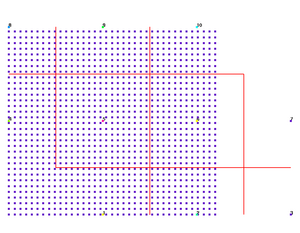
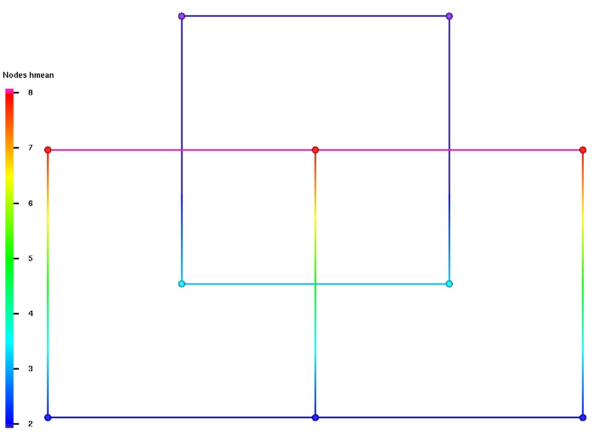

A kdtree node search is used to find the source mesh nodes located in each of the Voronoi sink point volumes. It is possible for source nodes to occur on the boundary of multiple Voronoi volumes. By default, all nodes found in each Voronoi volume are used to upscale to the enclosed sink node. In this case, source nodes on multiple Voronoi boundaries will be included in upscale calculations more than once. The keyword option single can be used for situations that require the sum of nodes in each Voronoi space to equal the total of source points used. This one-to-one correspondence is written to the source cmo attribute pt_gtg. This attribute can be reused during multiple calls to the upscale command and will greatly reduce CPU time. The keyword that allows the attributes to be kept as part of the sink cmo is keepatt. Note that information regarding duplicate nodes on Voronoi volume boundaries will be lost if the pt_gtg is used instead of the default search.
The upscale method options provide choices for the
calculation of the associated set of source nodes on to the
single sink node.
The scale_method parameter includes
sum, min, max, and averages ariave, harave, geoave.
For all positive data sets containing at least one pair of nonequal values, the harmonic mean is always the least of the three means, while the arithmetic mean is always the greatest of the three and the geometric mean is always in between.
The format for the command line is as follows:
upscale / scale_method / cmosink, attsink / 1,0,0 / cmosrc, attsrc /
[boundary_choice] [keepatt] [set_id]
Keywords appearing after the source cmo attribute name are optional and may appear in any order.
scale_method is the choice of upscale calculation applied to each set of source nodes within each sink Voronoi cell where x(1) to x(n) are the values of source nodes 1 to n found for the sink point. The choices are as follows:
ariave - For each sink point, calculate the arithmetic mean of n values from source attribute attsrc
sink_val = (x(1) + x(i)... + x(n)) / n
for 4 values; 1,2,3,4 ariave = 2.5
geoave - For each sink point, calculate the geometric average of n values found in attsrc
sink_val = ( x(1) * x(i)... * x(n) )**(1/n)
for 4 values; 1,2,3,4 geoave = 2.21336
harave - For each sink point, calculate the harmonic mean of n values from source attribute attsrc
sink_val = n / ( 1/x(1) + 1/x(i)... + 1/x(n) )
for 4 values; 1,2,3,4 harave = 1.92
min or max - For each sink point, assign the min or max source attribute from n values found in attsrc
sink_val = min(x(1),x(i),x(n))
for 4 values; 1,2,3,4 min = 1
sink_val = max(x(1),x(i),x(n))
for 4 values; 1,2,3,4 max = 4
sum - For each sink point, calculate the sum of n values from source attribute attsrc
sink_val = x(1) + x(i)... + x(n)
for 4 values; 1,2,3,4 sum = 10
cmosink, attsink are the cmo name and attribute name to write sink values into. The scale method detirmines which calculation is applied to the source attribute value and written to the sink attribute. All integer attributes are converted to double for the calculations. The resulting values are then converted to the nearest integer if the sink attribute is integer.
indexed_set is the set of sink nodes to write scaled values to. 1,0,0 will select all sink nodes
cmosrc, attsrc are the cmo name and attribute name are the cmo and attribute to interpolate from. Points from the source grid will be located within the Voronoi volumes of sink nodes.
The following parameters are optional for the command upscale.
boundary_choice provides a method of choice when source nodes are found on the boundary of multiple Voronoi volumes of sink nodes. By default, each set of souce nodes found within each volume are used to calculate an upscale value for the sink node. In this case if duplicate nodes occur on multiple cells, the sum number of nodes used in upscale calculations will exceed the sum total of nodes in the source mesh. If the number of source nodes used must equal the number of source mesh nodes, choose an boundary_choice to detirmine which sink volume an boundary node should be assigned to. The result is a one-to-one correspondence with each source point assigned to a single sink node id which is stored in source attribute pt_gtg. Source nodes that are found on shared Voronoi boundaries are flagged in source attribute dups_gtg.
single selects the Voronoi volume of the first sink node encountered and does not use any after that.
divide not implemented.
multiple uses all source nodes found in each sink Voronoi volume.
att_option is used during multiple calls to upscale with the same two grids. It keeps source attributes created during the search routines and uses these attributes to look up associated node numbers. The upscale command uses kdtree to create the source attribute pt_gtg that associates source nodes to sink node volumes. Note that this correlation is one-to-one and source nodes sharing multiple Voronoi volume boundary are tagged in a second source attribute called dups_gtg.
delatt deletes any attributes created during the kdtree searches. By default these attributes are removed.
keepatt keeps attributes pt_gtg and dups_gtg created during the kdtree searches. The source node attribute pt_gtg has the first found sink node id. The node attribute dups_gtg is flagged each time the source node occurs in a sink Voronoi cell, allowing the user to find source nodes on cell boundaries. Use of this attribute will greatly reduce CPU time.
set_id creates and keeps the source attribute pt_gtg containing sink id numbers found from the sink mesh. This is the same attribute created and kept for the keepatt option except that if the attribute already exists, it is deleted and re-created with a new search. This is recomended if the pt_gtg attribute exists, but user is not sure the current sink mesh is the same as used to create the attribute.
FORMAT:
upscale / scale_method / cmosink, attsink /1,0,0/ cmosrc, attsrc / &
[ keepatt | delatt ] [ set_id ] [ single | divide ]EXAMPLES:
upscale / sum / cmo_sink icount /1,0,0/ cmo_src ival
upscale / sum / cmo_sink icount /1,0,0/ cmo_src ival/ single keepatt
upscale / min / cmo_sink imin /1,0,0/ cmo_src ival/ single keepatt set_id
upscale / max / cmo_sink imax /1,0,0/ cmo_src ival/ keepatt
upscale / ariave / cmo_sink ave_val /1,0,0/ cmo_src xval/
upscale / harave / cmo_sink har_val /1,0,0/ cmo_src xval/
upscale / geoave / cmo_sink geo_val /1,0,0/ cmo_src xval/
EXAMPLES 1 and 2:
Upscale 1221 source points to 10 sink points with using method sum and showing the difference between allowing multiple use of nodes on Voronoi cell boundaries and the single option which uses nodes on cell boundaries only once. Images showing the source and sink points are shown below.
Example 1:
cmo/setatt/cmo_src/ival/1,0,0/ 1
upscale / sum / cmo_sink icount /1,0,0/ cmo_src ival
math/sum/cmo_src/sumtot/1,0,0/cmo_src/ival
In this example, search will find the sets of source nodes enclosed within each sink Voronoi cell.The ival attribute values are added for each set and written to the sink icount attribute. Because the attribte ival has all values set to 1, the icount attribute will contain the number of source nodes found in each Voronoi volume. The source node values will be counted regardless if they are on a Voronoi boundary and are in multiple Voronoi volumes. The result with duplicate boundary points will be a sum of points used greater than the total number of source mesh points.
In this example, math/sum will result in at total greater than the number of nodes used if there are duplicatate Voronoi boundary points.Example 2:
cmo/setatt/cmo_src/ival/1,0,0/ 1
upscale / sum / cmo_sink icount /1,0,0/ cmo_src ival/ single keepatt
math/sum/cmo_src/sumtot/1,0,0/cmo_src/ival
This is the same as Example 1 except that duplicate boundary points will be counted for the first found Voronoi volume and skipped thereafter. This one-to-one correspondance of source nodes to sink Voronoi volume will be stored in the source attributes pt_gtg with sink node numbers, and dups_gtg containing flags of the duplicate boundary points. These attributes will not be deleted.
In this example, math/sum will result in a total equal to the number of nodes used.cmo/setatt/COARSE_MO/idebug 6 upscale/sum/COARSE_MO,icount/1,0,0/FINE_MO/imt keepatt pt_gtg attribute added to source cmo. dups_gtg attribute added to source cmo. UPSCALE METHOD: sum options: keepatt multiple 10 Sink Nodes of icount in course mesh: cmoc 1221 Source Nodes of imt1 in fine mesh: cmof Source Nodes Percent Done 306 25 % 611 50 % 916 75 % 1221 100 % 1221 Total source nodes searched. --- Sink id # of nodes used calculated value --- 1 189 189 Duplicate nodes 1 1 2 108 108 4 189 189 Duplicate nodes 8 8 5 256 256 6 192 192 8 72 72 9 128 128 10 96 96 8 sink nodes out of 10 assigned values. 1230 source nodes out of 1221 used as source values. 9 duplicate nodes on Voronoi boundaries used multiple times. UPSCALE/sum/ from imt1 to icount Done. cmo/printatt/COARSE_MO/icount Attribute: icount 1 189 2 108 3 0 4 189 5 256 6 192 7 0 8 72 9 128 10 96 math/sum/COARSE_MO/sumtot/1,0,0/COARSE_MO/icount icount sum = 1230cmo/setatt/COARSE_MO/idebug 6 upscale/sum/COARSE_MO,icount/1,0,0/FINE_MO/imt/single keepatt nodes on Voronoi boundaries set to a single source volume. pt_gtg being used for sink node id numbers. dups_gtg being used for nodes on duplicate cell boundaries. UPSCALE METHOD: sum options: keepatt single 10 Sink Nodes of icount in course mesh: cmoc 1221 Source Nodes of imt1 in fine mesh: cmof SKIPPING POINT SEARCH... using lookup attribute pt_gtg Source Nodes Percent Done 306 25 % 611 50 % 916 75 % 1221 100 % 1221 Total source nodes searched. --- Sink id # of nodes used calculated value --- 1 188 188 2 108 108 4 181 181 5 256 256 6 192 192 8 72 72 9 128 128 10 96 96 8 sink nodes out of 10 assigned values. 1221 source nodes out of 1221 used as source values. 9 duplicate nodes on Voronoi boundaries used only once. UPSCALE/sum/ from imt1 to icount Done. cmo/printatt/COARSE_MO/icount Attribute: icount 1 188 2 108 3 0 4 181 5 256 6 192 7 0 8 72 9 128 10 96 math/sum/COARSE_MO/sumtot/1,0,0/COARSE_MO/icount icount sum = 1221EXAMPLE 2 IMAGES: These images show the 10 numbered sink points and the 1221 source points. In this example all source points have an imt1 value of 1. The sink points each have a value in icount equal to the number of nodes used for the associated Voronoi volume. The red lines show the Voronoi cell boundaries for the 10 sink points. Click on image to enlarge.
Source points all equal to 1,
Sink points colored by upscaled value.Source points colored by associated
sink node id, attribute pt_gtg.Source points colored by number of duplicate
cell boundaries, attribute dups_gtg. 

Example 3:
Show results for the 3 versions of mean calcuations.
* use single quad element with two nodes located * so they will capture 4 nodes each from source * for source mesh FINE_MO with two quad elements * assign bottom nodes to 2 and top nodes to 8 cmo setatt FINE_MO xmean 2.0 cmo setatt FINE_MO xmean 4,6,1 8.0 * Upscale using averages * and write to attributes for nodes 1 and 2 only ***** Arithmetic mean ***** upscale/ariave/COARSE_MO amean/1,2,0/ FINE_MO/xmean/ ***** Geometric mean ***** upscale/geoave/COARSE_MO gmean/1,2,0/ FINE_MO/xmean/ ***** Harmonic mean ***** upscale/harave/COARSE_MO hmean/1,2,0/ FINE_MO/xmean/ ***** SOURCE VALUES from FINE_MO ******** cmo printatt FINE_MO xmean Attribute: xmean 1 2.00000E+00 2 2.00000E+00 3 2.00000E+00 4 8.00000E+00 5 8.00000E+00 6 8.00000E+00 ***** RESULT VALUES ******** cmo printatt COARSE_MO amean Attribute: amean 1 5.00000E+00 2 5.00000E+00 3 0.00000E+00 4 0.00000E+00 cmo printatt COARSE_MO gmean Attribute: gmean 1 4.00000E+00 2 4.00000E+00 3 0.00000E+00 4 0.00000E+00 cmo printatt COARSE_MO hmean Attribute: hmean 1 3.20000E+00 2 3.20000E+00 3 0.00000E+00 4 0.00000E+00Image 1 shows Arithmetic mean result of 5.0
Result Sink nodes 1 and 2 are the two lower nodes of the single quad element in image.
Source nodes are on the two adjacent quad elements.UPSCALE METHOD: ariave 4 Sink Nodes of amean in course mesh: cmoc 2 Selected Set of Nodes will be written 6 Source Nodes of xmean in fine mesh: cmof Source Nodes Percent Done 3 25 % 5 50 % 6 Total source nodes searched. --- Sink id # of nodes used calculated value --- 1 4 0.5000000E+01 2 4 0.5000000E+01 2 sink nodes out of 4 assigned values. 2 duplicate nodes on Voronoi boundaries used multiple times. UPSCALE/ariave/ from xmean to amean Done.
Image 2 shows Geometric mean result of 4.0
Result Sink nodes 1 and 2 are the two lower nodes of the single quad element in image.
Source nodes are on the two adjacent quad elements.UPSCALE METHOD: geoave 4 Sink Nodes of gmean in course mesh: cmoc 2 Selected Set of Nodes will be written 6 Source Nodes of xmean in fine mesh: cmof Source Nodes Percent Done 3 25 % 5 50 % 6 Total source nodes searched. --- Sink id # of nodes used calculated value --- 1 4 0.4000000E+01 2 4 0.4000000E+01 2 sink nodes out of 4 assigned values. 2 duplicate nodes on Voronoi boundaries used multiple times. UPSCALE/geoave/ from xmean to gmean Done.
Image 3 shows Harmonic mean result of 3.2
Result Sink nodes 1 and 2 are the two lower nodes of the single quad element in image.
Source nodes are on the two adjacent quad elements.UPSCALE METHOD: harave 4 Sink Nodes of hmean in course mesh: cmoc 2 Selected Set of Nodes will be written 6 Source Nodes of xmean in fine mesh: cmof Source Nodes Percent Done 3 25 % 5 50 % 6 Total source nodes searched. --- Sink id # of nodes used calculated value --- 1 4 0.3200000E+01 2 4 0.3200000E+01 2 sink nodes out of 4 assigned values. 2 duplicate nodes on Voronoi boundaries used multiple times. UPSCALE/harave/ from xmean to hmean Done.


{kind=link}